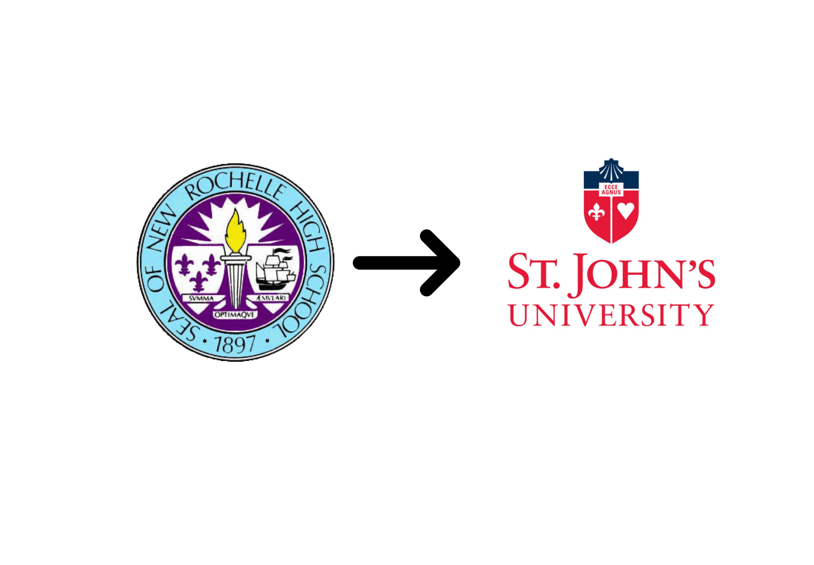
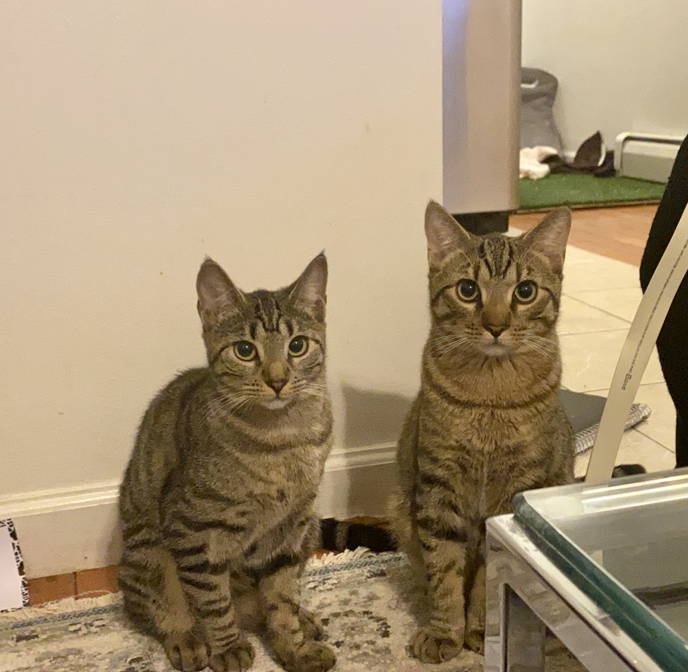

Education
I attended New Rochelle High School and graduated in the year of 2017. After applying to many schools I selected St. John's due to my induction to the Ozanam Scholars Program. This is a 4 year scholarship program on campus where your obligations are to volunteer weekly, travel abroad every year and conduct service, and complete a capstone research project as a senior.
Work/Internship
Programming Skills
Interests
My general interests include crocheting, knitting, sewing, and doing crafty things. I enjoy collecting earrings and other jewlery pieces from different cities, states, and countries and enjoy thrift shopping. I am into the arts and photography as well and love animals. Sometimes I do foster animals and here are my two recent 7 month old foster kitten siblings Chai and Matcha.
Favorite Media
| Favorite Song | Favorite Film | Favorite Show |
< |
|
|
|---|
Favorite Website
Petfinder is an animal adoption site that I tend to view daily because I am looking to adopt soon. It is the largest, online, searchable database of thousands animals who need homes.
Projects